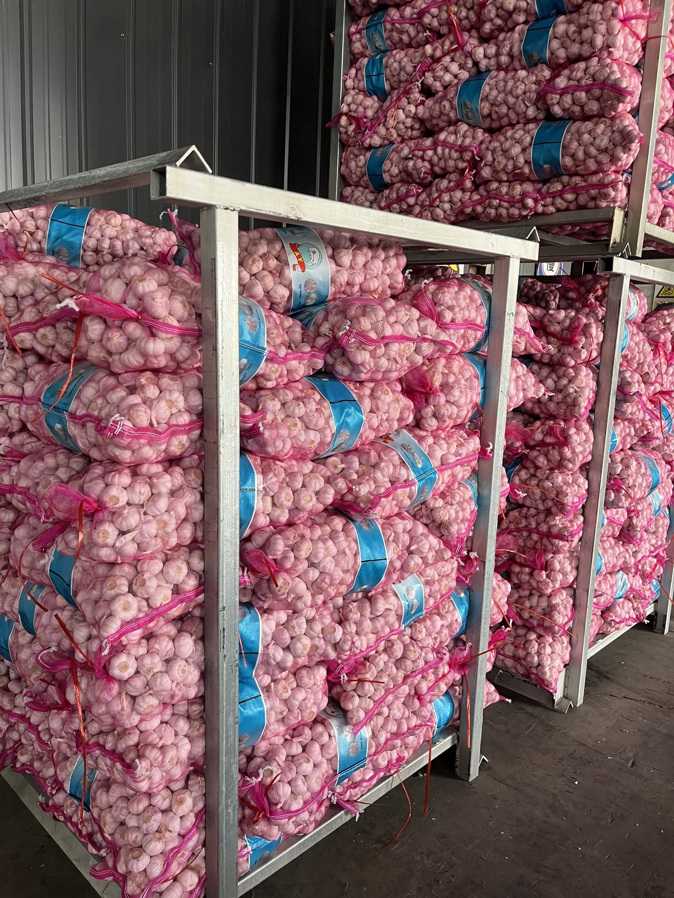

Complete specifications for 4.5cm to 6.5cm+ garlic — bulb weight, clove count, target markets, Normal White vs Pure White differences, sorting process, and export quality standards.
Published: July 14, 2026 | Reading time: 10 min
Quick Answer: China export garlic is graded into 5 size specifications: 4.5cm, 5.0cm, 5.5cm, 6.0cm, and 6.5cm+. The diameter is measured at the widest point of the bulb. African markets prefer 4.5-5.5cm, Middle East prefers 5.5-6.5cm, Southeast Asia buys 5.0-6.0cm, and Europe demands 6.0cm+. Quality standards require moisture ≤7%, sprout ≤1%, and roots ≤1cm.
Size is the single most important specification in the garlic trade. It directly affects price, target market, packaging choice, and even container loading capacity. Understanding garlic size specifications is essential for any importer who wants to source the right product for their market and avoid costly specification mismatches.
Chinese garlic from Shandong is renowned worldwide for its large bulb size, tight clove structure, and excellent keeping quality. The region's loess soil, distinct four-season climate, and decades of cultivation expertise produce garlic that consistently meets the most demanding international specifications.
Chinese export garlic is graded by bulb diameter, measured at the equator (widest point) of the bulb. The grading system uses a minimum diameter — for example, "5.5cm" means all bulbs in that grade measure at least 5.5cm in diameter. Here is a detailed breakdown of each size grade:
The 4.5cm grade is the smallest export size, with bulbs weighing 30-40 grams each. This size is primarily destined for African markets — particularly Nigeria, Ghana, and Ivory Coast — where price sensitivity is high and garlic is sold in open-air markets rather than supermarkets. The smaller bulb size means lower per-kilogram cost, making it accessible to budget-conscious consumers. While the cloves are smaller, the flavor intensity is identical to larger sizes.
The 5.0cm grade offers a balance between cost and size. Bulbs weigh 40-55 grams with 7-9 cloves each. This size is popular in Southeast Asian markets (Thailand, Vietnam, Philippines) and continues to be a strong seller in African markets looking for a slight quality upgrade. It is also the preferred size for garlic processing — dehydration, mincing, and paste production — because the cloves are large enough for efficient peeling but the raw material cost is lower than premium grades.
The 5.5cm grade is the most widely traded garlic size globally. At 55-70 grams per bulb with 8-10 cloves, it hits the sweet spot between appearance, yield, and cost. Middle Eastern importers (UAE, Saudi Arabia, Kuwait) favor this size for both wholesale and retail channels. It is large enough to look attractive on supermarket shelves but affordable enough for bulk trade. If you are unsure which size to order, 5.5cm is almost always a safe choice.

The 6.0cm grade represents premium export quality. Bulbs weigh 70-90 grams with 9-12 cloves. This size is the standard for European markets (Netherlands, Germany, France, UK), where consumers expect large, attractive bulbs for retail display. Middle Eastern importers also buy 6.0cm for high-end retail channels. The larger bulb size means fewer bulbs per kilogram, but each bulb provides more usable garlic — an important consideration for food service and industrial buyers.
The 6.5cm+ grade is the finest garlic available, with bulbs exceeding 90 grams and sometimes reaching 120+ grams. These jumbo bulbs are rare — typically only 10-15% of a harvest qualifies — and command the highest prices. They are exported primarily to European supermarkets, the United States, and premium Middle Eastern retailers where visual presentation is paramount. The 6.5cm+ grade is almost always packed in cartons rather than mesh bags to protect the large, valuable bulbs during transit.
In addition to size, Chinese export garlic is categorized by skin color: Normal White and Pure White. Both come from the same garlic variety (Allium sativum) grown in Shandong, but they differ in appearance, price, and target market.
Key Insight: The difference between Normal White and Pure White is purely cosmetic — the flavor, pungency, and shelf life are identical. Pure White commands a premium solely because of visual appeal. If your market sells garlic in opaque packaging or processes it before retail sale, Normal White offers the same quality at a significantly lower cost.
After harvest in June, garlic is cured (dried) for 7-10 days in the field or in drying tunnels. Once properly cured, the garlic enters the sorting and grading line. This is a critical step that determines the final size grade and quality classification of the product.
Workers manually remove visibly defective bulbs — those with mold, rot, mechanical damage, excessive root growth, or visible sprouting. Bulbs with broken skins or insufficient skin coverage are also removed at this stage. This initial cull typically removes 5-10% of the input material.
The garlic passes through a rotary sieve grader with calibrated circular holes of decreasing diameter (6.5cm, 6.0cm, 5.5cm, 5.0cm, 4.5cm). Bulbs larger than 6.5cm pass over the first sieve and are collected as the 6.5cm+ grade. Bulbs between 6.0cm and 6.5cm fall through the first sieve but not the second, and so on. This mechanical grading ensures consistent size within each grade.
After size grading, workers or optical color sorters separate Normal White from Pure White garlic. Bulbs with any visible purple or brownish stripes on the outer skin are classified as Normal White. Only bulbs with uniformly white, unblemished skins qualify as Pure White. This color sorting is labor-intensive and is one reason Pure White commands a price premium.
Roots are mechanically trimmed to ≤1cm. A final visual inspection removes any remaining defective bulbs. The sorted, graded, and inspected garlic is then transferred to the packing area where it is packed into mesh bags or cartons according to customer specifications.
Chinese garlic intended for export must meet strict quality standards. These standards are enforced by China Customs (formerly CIQ) before a phytosanitary certificate is issued. The following parameters define export-grade garlic:
Different global markets have distinct size preferences based on consumer expectations, retail formats, and price points. Understanding these preferences is crucial for sourcing the right garlic for your target market.
Sourcing Tip: If you serve multiple markets, consider ordering mixed sizes in a single container. ExCrop can load a 40HQ with multiple sizes and varieties — for example, 15MT of 5.0cm Normal White for African retail and 13MT of 6.0cm Pure White for European clients — maximizing your inventory flexibility from a single shipment.
ExCrop supplies all 5 size grades in both Normal White and Pure White. Tell us your target market and we'll recommend the best specification.
WhatsApp Us Get a Quote